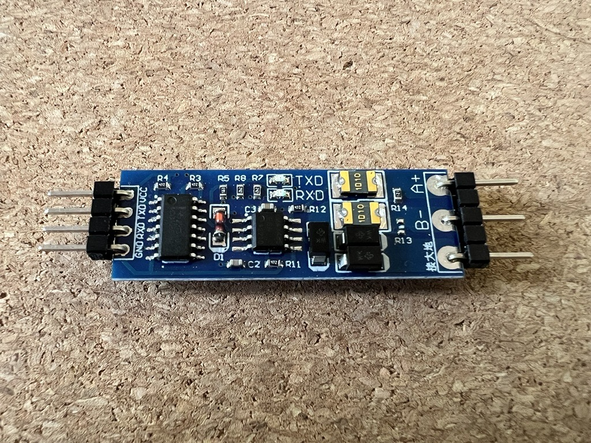
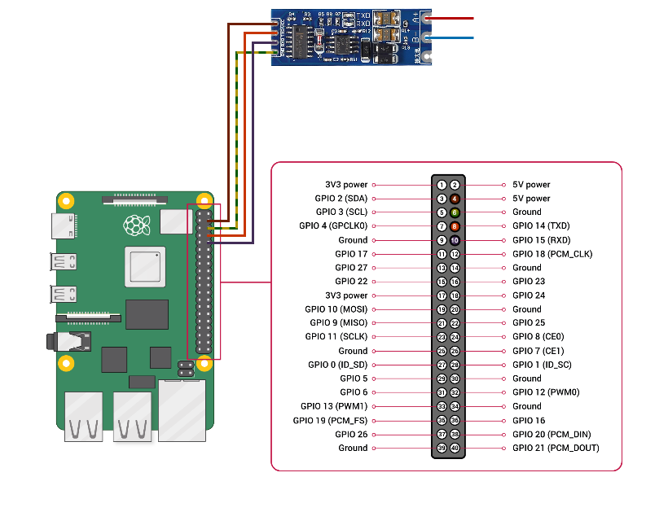

Modbus RTU with a Raspberry Pi
2025-01-06Preamble
On a now-not-so-recent client project I was tasked with developing an IoT device capable of communicating with devices via Modbus RTU. I hadn't heard of Modbus before starting this project, so I tried to prepare myself for a steep learning curve.
I found a number of blog posts, tutorials, and stackoverflow answers when looking at how to interface with Modbus devices, but the documentation I used was very fragmented. This guide serves more as all-in-one documentation to my future self, and to anyone wanting to try to solve a similar problem; hopefully this post will help someone to avoid the same issues I ran into and had to figure out a way round.
Hardware and software
The Raspberry Pi 4 was chosen as the prototyping device due to great documentation, a long support period, reasonably low cost, and good availability. Ubuntu Server 22.04 was chosen as the operating system as I'm reasonably comfortable with Ubuntu having used it on laptops and home servers for several years now, and it also has a long support period. Long term support is probably less important for a prototyping device than for a production device, but a well-supported development platform makes life easier for any future developers who could be working on this project.
After a little research, I discovered that Modbus RS485 to UART adapters were reasonably cheap, and simple enough to solder and connect up to the Raspberry Pi. I bought a pack of 6 adapters from Amazon, and while they now seem to be unavailable, there are many other similar ones priced around £1 per adapter. The design seems to be based on this adapter from Joy-IT, who provide very good documentation.
My original prototype was written with Python, as it's a language I'm fond of and have a fair bit of experience with. However, at the time there weren't many Python developers available at work so primarily due to availability and ease of onboarding I decided to proceed with Typescript as the language we'd build the product with. The examples I'll show will use Javascript to demonstrate how to connect and request registers over Modbus RTU as all of our internal testing scripts have been written as Javascript modules.
Configuring the Raspberry Pi
Configuring for UART
Ubuntu Server 22.04 on the Raspberry Pi ships with UART enabled, but by default there is a login terminal running for serial TTY on the two UART used here to connect to the RS485 adapter. This can be disabled by disabling the serial-getty service, and removing the console config from /boot/firmware/cmdline.txt.
sudo systemctl stop serial-getty@ttyS0.service
sudo systemctl disable serial-getty@ttyS0.service
sudo systemctl mask serial-getty@ttyS0.service
sudo nano /boot/firmware/cmdline.txt
# remove `console=serial0,115200` from the start of the line
Ubuntu Server 22.04 also seems to have Bluetooth running on the UART interface by default, so a line of config can be added to /boot/firmware/config.txt to allow both UART and Bluetooth to operate at the same time.
sudo nano /boot/firmware/config.txt
# ensure `enable_uart=1` is present in the file
# add `dtoverlay=miniuart-bt` after the `enable_uart` line
Now we can give the current user permissions to use UART via the TXD and RXD pins.
sudo adduser rob tty
sudo adduser rob dialout
Once connected, the Modbus adapter can be communicated with using the path /dev/ttyAMA0, with whatever baud rate is configured on the device being connected to. The Modbus adapter I'm using handles CTS/RTS automatically with a small capacitor, which made this device a lot easier to use with the Raspberry Pi than other adapters I was trying out.
Wiring up the adapter
I got help from a more capable colleague to solder 90º pins onto the RS485 adapter to make it easier to attach cables to the GPIO headers on the Raspberry Pi. A cheap helping hand tool with a magnifying glass made this a lot easier to solder.

The wiring to the Raspberry Pi can now be done using some cheap Dupont wires.
- The
VCCpin on the adapter connected to one of the 5V pins on the Pi (pin 2 or 4) - The
TXDpin on the adapter connected to the TXD pin on the Pi (pin 8/GPIO 14) - The
RXDpin on the adapter connected to the RXD pin on the Pi (pin 10/GPIO 15) - The
GNDpin on the adapter connected to one of the ground pins on the Pi (I used pin 6)

The A+ pin on the adapter can then be wired up to the +5V pin on whatever modbus device is being communicated with, and the B- to the -5V pin.
I've used standard British wire colours for power/live (brown) and the ground (yellow/green), then just made up the rest of the colours for the rest of the pins because why not.
Reading Modbus registers
Installing requirements
First, Node.js will need to be installed on the Raspberry Pi. The version included in apt on Ubuntu is pretty old, so the following instructions are for installing Node 20.
curl -fsSL https://deb.nodesource.com/setup_20.x | sudo -E bash -
sudo apt install nodejs
# check installed version
node --version
Now we can install a library to work with the data being sent and received via the UART pins.
I have been using modbus-serial to work with the Modbus devices on my client project with no issues. It uses serialport under the hood, with dedicated instructions for reading from holding and input registers, and for writing one or more registers too. It also seems to be reasonably actively maintained (at the time of writing).
npm install modbus-serial
Running the code
As an example, I'm going to read the current battery percentage from a Solax X1 Hybrid G4 using a Javascript module test-modbus.mjs. The battery percentage is an input register at address 0x1C.
import ModbusRTU from 'modbus-serial';
async function run() {
const client = new ModbusRTU();
// set the client ID to 1 (as configured on the Solax)
client.setID(1);
// set the timeout to 10 seconds
client.setTimeout(10000);
// connect via the UART pins, with a baud rate of 19200 bps (as configured on the Solax)
await client.connectRTUBuffered('/dev/ttyAMA0', {baudRate: 19200});
// read the battery percentage from the input registers and log out the result
const buffer = await client.readInputRegisters(0x1c, 1);
const percentage = buffer.data[0];
console.log(`Battery is at ${percentage}%`);
}
run();
This can then be run with
node test-modbus.mjs
# prints: Battery is at 84%
Sometimes it's useful to see what bytes are being sent via Modbus RTU, so debugging in the
modbus-seriallibrary can be enabled by setting theDEBUGenvironment variable tomodbus*:DEBUG=modbus* node test-modbus.mjs
By debugging the modbus-serial library we can see that the buffer sent over the serial UART connection is 01 04 00 1c 00 01 f0 0c
01 client ID
04 read input register(s) function code
00 1c starting register
00 01 number of registers to read
f0 0c crc16 checksum
If I were just using the Serialport library without modbus-serial, I'd have to construct this payload myself to send it to the Modbus device.
The response to this request would be 01 04 02 00 54 b8 cf
01 client ID
04 read input register(s) function code
02 number of bytes in response
00 54 decimal value 84
b8 cf crc16 checksum